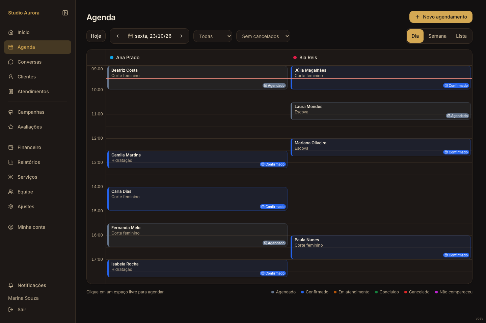
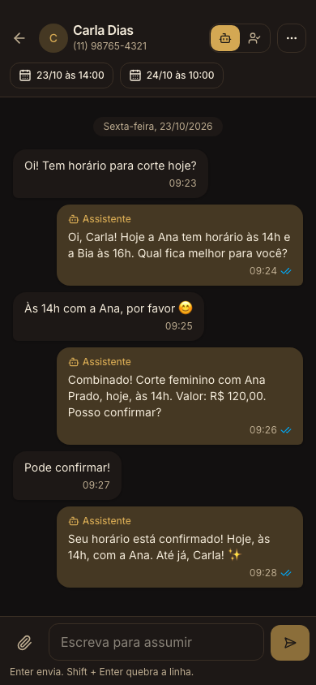
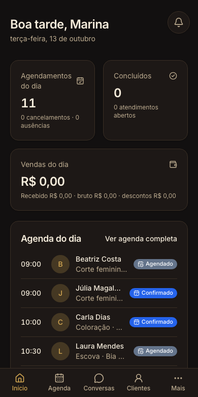

INTELIGÊNCIA PARA O SEU SALÃO
Seu talento cuida.
A LUNA organiza.
Uma assistente com IA no WhatsApp.
Uma gestão que acompanha seu ritmo.
Do primeiro “oi” ao fechamento do caixa: atendimento automático, agenda e equipe conectados, em um só lugar.


Interface real · Dados de demonstração
de ponta a ponta. IA no WhatsApp Agenda integrada Caixa e financeiro Equipe e comissões
01 / SUA NOVA ASSISTENTE
O salão fecha.
A conversa continua.
Sua cliente lembra do corte à noite. A LUNA responde no WhatsApp, consulta os horários e ajuda a agendar. Quando a equipe chega, a conversa já virou compromisso.
Mais que responder.
Ela ajuda a resolver.
- 01
Entende a conversa
Responde sobre serviços, preços e horários. Entende áudios e o contexto do atendimento.
- 02
Consulta a agenda de verdade
Oferece horários disponíveis, agenda, remarca e cancela com a confirmação da cliente.
- 03
Trabalha junto com a equipe
Você acompanha tudo e assume quando quiser. Se precisar de uma pessoa, a LUNA chama.
Com a voz do seu salão
Nome, tom e orientações da assistente personalizados para o seu jeito de atender.
Cuida de lembrar
Confirmações, lembretes, cuidados após o serviço e pesquisas de satisfação automáticos.
Sua equipe no controle
Conversa e histórico no mesmo painel, com liberdade para assumir e devolver à assistente.
02 / CONHEÇA POR DENTRO
Tudo conversa.
Seu dia flui.
A IA abre a conversa. A LUNA conecta o restante da rotina.
Cada horário,
no seu lugar.
Agenda por dia, semana ou lista. Veja quem atende, acompanhe cada status e organize os horários da equipe.
- Disponibilidade integrada à assistente
- Folgas e bloqueios por profissional
- Vários serviços no mesmo agendamento
Clareza para
decidir melhor.
Acompanhe vendas, recebimentos, despesas e valores a receber. Do atendimento ao resultado do período.
- Caixa com várias formas de pagamento
- QR Code Pix com o valor do atendimento
- Despesas e recebimentos organizados
Contas claras.
Equipe tranquila.
Comissões calculadas no fechamento, com percentuais por serviço e profissional. Mais clareza na hora de fazer o acerto.
- Comissões, adiantamentos e saldo a pagar
- Extrato do pagamento em PDF
- Cada profissional acompanha seus valores
Quem volta merece
ser lembrada.
Preferências, histórico e informações das clientes perto de quem atende. Um cuidado que continua entre uma visita e outra.
- Histórico de agendamentos e atendimentos
- Fotos de referência e de antes e depois
- Importação e exportação por planilha

Onde você estiver.
03 / FEITA PARA A VIDA REAL
Seu salão
na palma da mão.
Entre um atendimento e outro, a rotina continua. A LUNA acompanha você no celular, com o que importa a poucos toques.
- Abra. Toque. Resolva.Agenda, conversas e gestão em uma interface feita para o celular.
- Na sua tela inicial.Instale pelo navegador no iPhone ou no Android, como um aplicativo.
- Cada pessoa, com seu acesso.Proprietária, gerente, recepção e profissionais com as permissões certas.
04 / VAMOS CONVERSAR?
Antes do
primeiro “oi”.
Algumas respostas para você
conhecer melhor a LUNA.
A assistente atende no WhatsApp do meu salão?
Sim. Depois da configuração e conexão do número, ela atende no WhatsApp do salão. Usa seus serviços, preços, horários e orientações para conversar com as clientes e consultar a disponibilidade da agenda.
A IA agenda sozinha? Eu continuo no controle?
A assistente consulta os horários e apresenta uma proposta. O agendamento, a remarcação ou o cancelamento só acontece com a confirmação da cliente. A equipe acompanha as conversas e pode assumir o atendimento a qualquer momento.
Funciona no celular e no computador?
Sim. A LUNA funciona pelo navegador, com interface adaptada a cada tela. No iPhone e no Android, você também pode adicioná-la à tela inicial como aplicativo. É necessário acesso à internet.
A LUNA ajuda com o financeiro e as comissões?
Sim. Você registra os pagamentos dos atendimentos, acompanha receitas, despesas e valores a receber. As comissões são calculadas no fechamento conforme o serviço e a profissional, com controle de adiantamentos e pagamentos à equipe.
Como conheço os planos e começo a usar?
Fale com a Cometki pelo botão “Quero conhecer a LUNA”. Vamos apresentar o produto e conversar sobre as condições disponíveis para o seu salão, a configuração e os primeiros passos.
MAIS PRESENÇA. MAIS ORGANIZAÇÃO. MAIS LUNA.
Dê espaço ao que
você faz de melhor.
Vamos mostrar como a LUNA pode fazer parte do seu salão?
Quero conhecer a LUNA Converse com a equipe Cometki pelo WhatsApp.